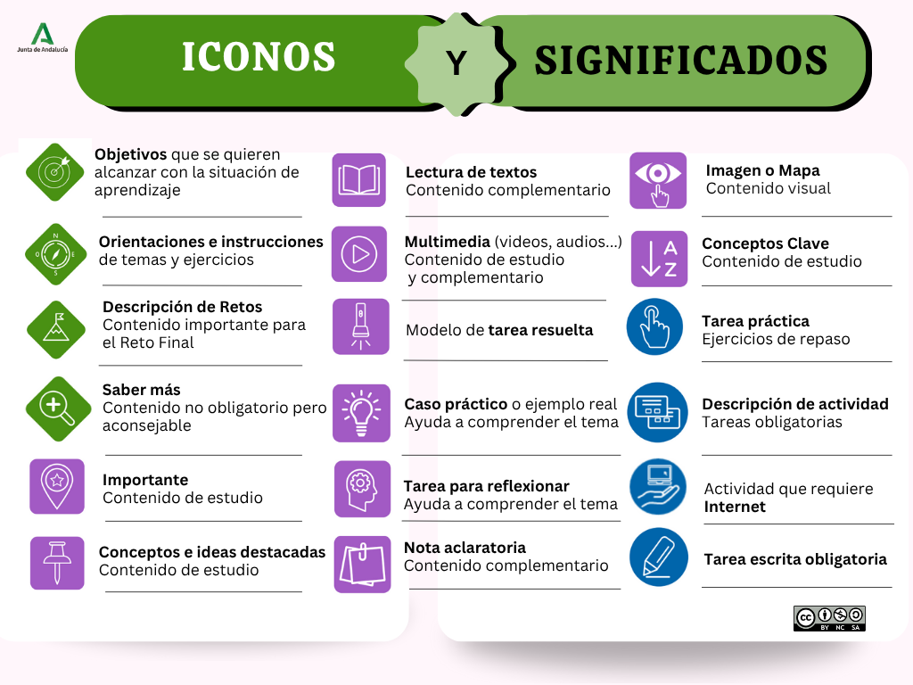

Instrucciones
Esta situación de aprendizaje está organizada en distintos bloques de contenidos y actividades que te ayudarán a comprender el tema, y un Reto Final para poner en práctica lo aprendido.
La estructura es la siguiente:
- Menú lateral izquierdo, donde puedes acceder a cada uno de los apartados (puedes ocultarlo pulsando la "X", en la parte superior izquierda de la página).
- Descripción del Reto Final e información inicial, para que puedas hacerte una idea general de por qué y para qué vas a trabajar en esta situación de aprendizaje.
- Actividades de recuerdo, para activar los conocimientos previos.
- Mini reto, para poner en funcionamiento dichos conocimientos y prepararte para el reto final.
- Bloques de contenido con contenidos destacados, imágenes y mapas interactivos, actividades relacionadas y conceptos clave... La importancia de estos contenidos se identifican con iconos.
- Resumen de contenidos.
- Documento para descargar.
En esta imagen se describen los principales iconos y su significado:
Haz clic en la imagen para ampliarla


(CC BY-NC-SA)
0. Introducción
Como ya has visto en la situación de aprendizaje anterior, el software forma parte de nuestro día a día. Cada vez que sacas el móvil para consultar el saldo de tu cuenta, reservas una cita médica desde una app o recibes una notificación de que tu pedido ya está en camino, hay alguien —o algo— detrás que ha tomado decisiones: si el saldo es suficiente, muestra el mensaje; si no, avisa al usuario. Ese "alguien" es un programa informático, y esa lógica la escribió una persona como tú.
Programar no es magia ni está reservado a genios; es, sencillamente, aprender a pensar de forma lógica para resolver problemas y traducir esas soluciones a un idioma que un ordenador pueda entender.
En esta situación de aprendizaje descubrirás cómo se construyen esas aplicaciones desde dentro, aprendiendo a crear programas capaces de almacenar datos, tomar decisiones, repetir acciones o reutilizar código para hacer soluciones más organizadas y eficientes. A medida que avances, comprobarás que programar no consiste solo en escribir código, sino en desarrollar una forma de pensar lógica y creativa que resulta útil tanto en el ámbito tecnológico como en muchas situaciones de la vida cotidiana y profesional.
1. Planteamos el reto

¿Te has parado a pensar la cantidad de tiempo que perdemos a final de mes intentando cuadrar facturas, gastos imprevistos y ahorros? Gestionar la economía doméstica puede convertirse en un auténtico dolor de cabeza, pero también es el escenario perfecto para que la tecnología trabaje a tu favor.
En esta situación de aprendizaje, tu reto será programar desde cero tu propio Gestor de Gastos Personales. A lo largo de la unidad aprenderás a almacenar datos, programar alertas automáticas de presupuesto y guardar historiales de forma organizada para construir esta aplicación paso a paso (puedes consultar todos los detalles en la página del Reto: Toma el control de tus finanzas).
¡Anímate a dar el paso! Verás lo satisfactorio que resulta resolver un problema cotidiano escribiendo tu propio código.
2. Estos serán tus logros
A lo largo de esta situación de aprendizaje, irás adquiriendo las piezas necesarias para construir tu propio Gestor de Gastos y entender cómo funciona el software por dentro. Al finalizar, habrás conseguido lo siguiente:
- Conocerás qué es un programa informático, cómo se estructura internamente y qué tipos de lenguajes de programación existen.
- Identificarás los elementos básicos de un programa: variables, constantes, tipos de datos, operadores y expresiones.
- Aprenderás a comunicarte con el usuario a través de la entrada y salida de datos, y a documentar tu código con comentarios.
- Identificarás cuándo y cómo utilizar estructuras de control para tomar decisiones y repetir acciones dentro de un programa.
- Descubrirás diferentes formas de organizar la información mediante estructuras de datos.
- Crearás funciones para reutilizar código y construir programas más ordenados y modulares y harás uso de bibliotecas.
- Serás capaz de leer y escribir archivos para que tus programas guarden y recuperen información de forma persistente.
- Identificarás los conceptos básicos de la Programación Orientada a Objetos (clases y objetos), una técnica que te permitirá diseñar programas mediante la representación de elementos del mundo real, (por ejemplo, creando un objeto "Cuenta Bancaria").
3. Conexión con la vida real.
Puede que en algún momento te hayas preguntado: ¿para qué voy a aprender a programar si no quiero ser informático? La respuesta es más sencilla de lo que parece.
Vivimos rodeados de software: las apps que usamos para pagar, para organizarnos o para comunicarnos han sido creadas por personas que aprendieron exactamente lo que tú vas a aprender en esta situación de aprendizaje. Pero más allá de crear aplicaciones, programar desarrolla una forma de pensar lógica y estructurada que resulta útil en cualquier ámbito profesional: desde la gestión de un negocio hasta la sanidad, pasando por la educación o la administración pública.
Más allá de la informática pura, desarrollar esta habilidad también tiene un impacto directo y muy positivo en tu día a día:
- Resolución práctica de problemas: aprenderás a enfrentarte a un obstáculo complejo dividiéndolo en pequeños pasos lógicos y manejables. El divide y vencerás que viste en la situación de aprendizaje 1.
- Pensamiento crítico: entenderás de verdad cómo las aplicaciones que usas a diario procesan tus datos y por qué toman ciertas decisiones.
4. Mapa conceptual
Descarga aquí la versión PDF.